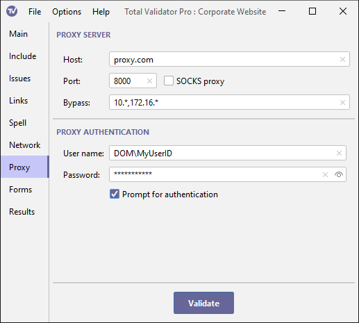

Documentation > Proxy Server Options
To access the Internet, either to test pages or to check for updates, your organisation may require connections to go through a Proxy Server. If you cannot test any pages on the Internet, or otherwise believe that you use a Proxy Server then you must complete this section. You may have to contact your IT provider or internal IT support function to find out what settings to use here.

If you have selected the Use System proxy menu option, Total Validator will try to use the operating system settings to determine which proxy server to use. But if this doesn't work, or if you simply wish to override these settings, you may supply the details here.
Proxy server
Enter the host name or IP address of the proxy server, optionally a port number (defaults to 8080, or 1080 for SOCKS) and whether it uses SOCKS.
You can also enter a comma-separated list of host names or IP addresses which will bypass the proxy
server. Note that this may not always override any system proxy settings that may be used. You may
also use a * character as a wildcard at the start or end of each host name or IP address, but not both,
and you cannot use * on its own. Also note that 127.0.0.1 and localhost are automatically included
so you do not have to list them here.
For most organisations, the settings here will be the same for every workspace you create.
So you should consider saving these to the defaults workspace, to avoid having to re-enter them for each workspace.
Proxy authentication
Many proxy servers require you to authenticate yourself, so there are fields to
enter the required user name and password to use.
When connecting to a proxy server using Windows (NTLM) authentication you
may need to supply a domain name. In this case enter the domain name
and user name separated by a backslash into the user name field. For
example, MYDOMAIN\myuser.
The password is masked with asterisks when you type it in, but you can use the Show password checkbox to display it.
This password will be stored as plain text when you save your workspace.
To avoid this, you may wish to use Prompt for authentication instead.
You may also need to use Prompt for authentication
if connections pass through more than one authenticating proxy, which require different name/password combinations.
Any proxy authentication details you enter using any method will be cached in memory until Total Validator is restarted to save you having to enter them more than once.
Prompt for authentication
Instead of entering the proxy authentication details above, you can choose to be prompted for them each time they are needed using this option. In this case a dialog box will be displayed, prompting you to enter a valid user/password combination.
Any proxy authentication details you enter will be cached in memory until Total Validator is restarted to save you having to enter them more than once.
Note: This option is ignored when using the browser extensions
with the Send DOM or Send source options to prevent pop-ups from appearing for every link on every page.
Instead you must use one of the methods above to ensure that the authentication details are cached first.